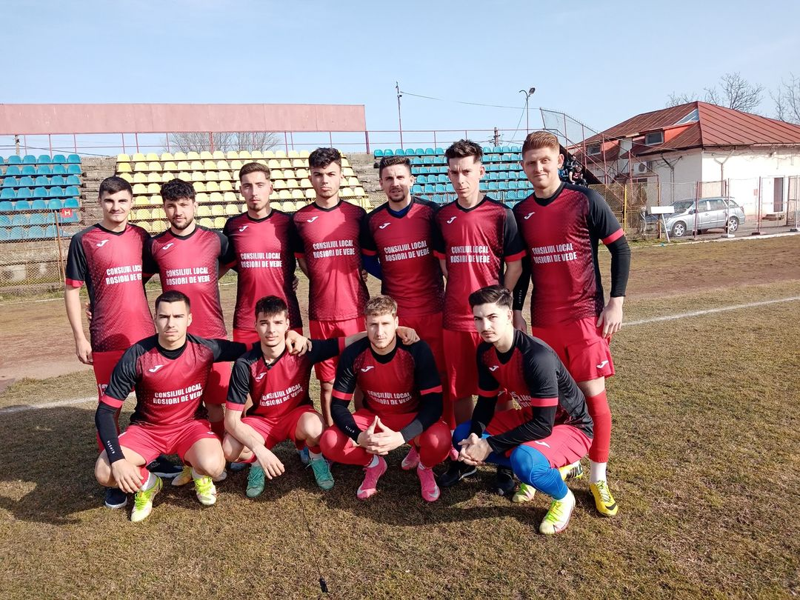
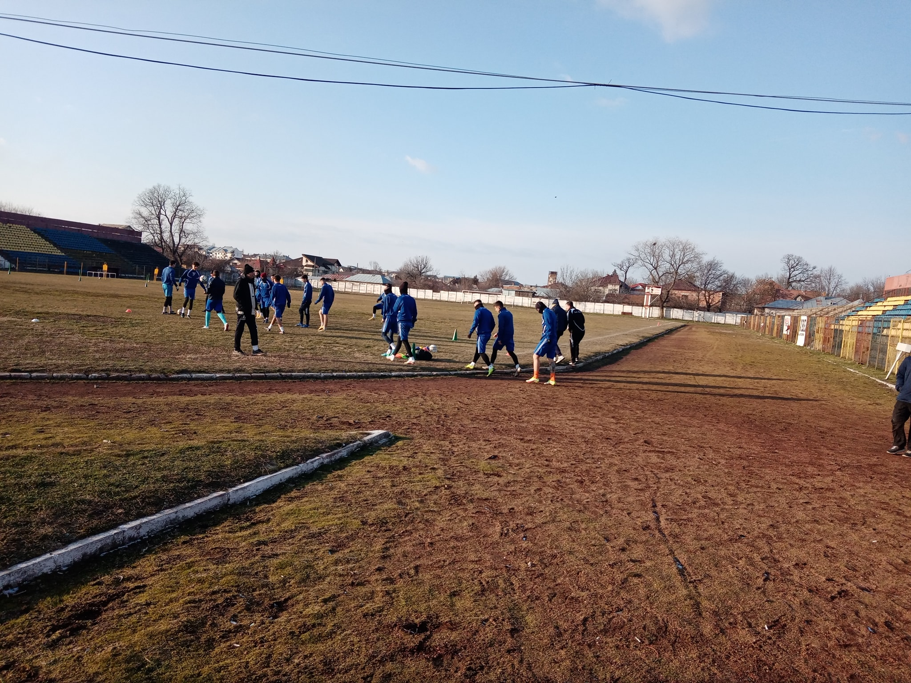
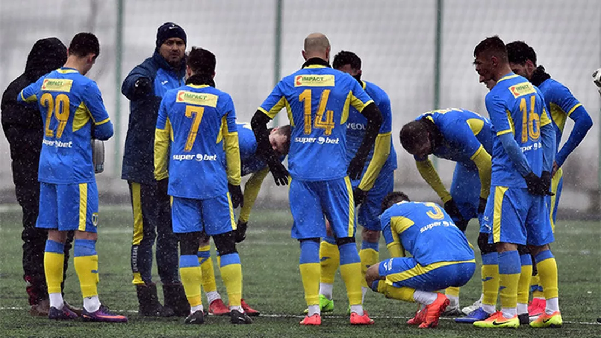
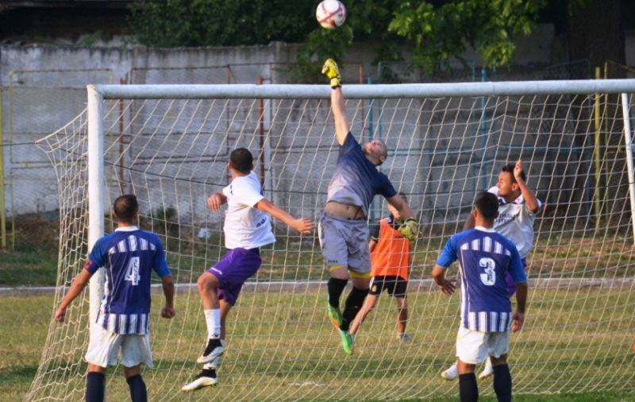
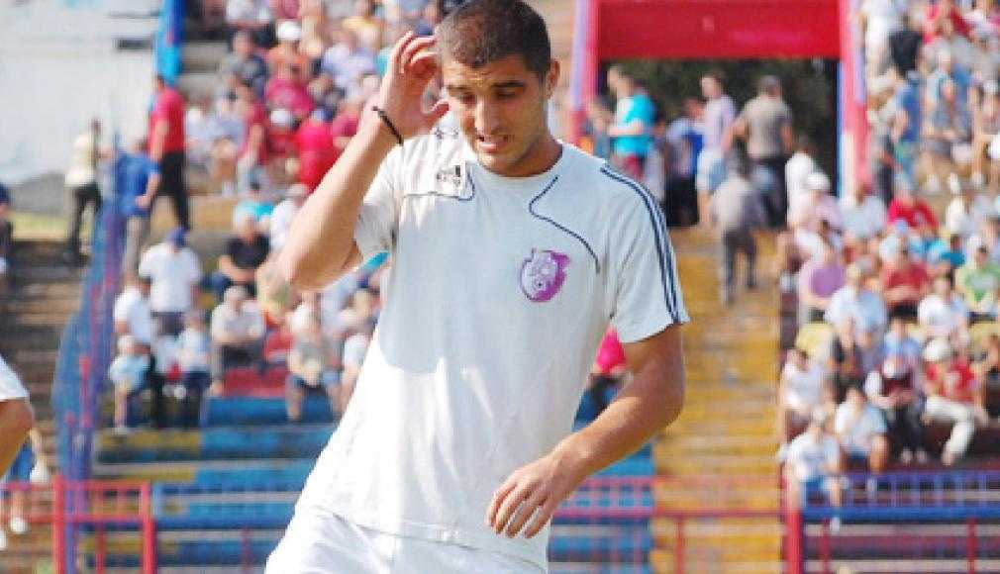

Sporting Roșiori a adus 13 jucători noi
Echipă de liga a 3-a, Sporting Roșiori, a transferat în acest inter-sezon, nu mai puțin de 13 jucători, pentru a acoperi posturile rămase vacante. Echipa antrenată de Marian Botea și Gheorghe Alexandru s-a întărit pe toate compartimentele, achiziționând fotbaliști cu experiență competițională la nivelul ligilor a 2-a și a 3-a. Fotbaliștii nou veniți sunt, după cum urmează: Raul Cochintu, Descultu Gabriel, Lungu Florin, Gherghiceanu Geani, Duduiu, Mierlea Ionut,Toma Adelin, Neaga Valentin, Matei Marius, Tanasescu, Dumitru Darius si Francis Agbleta. Rosiorenii vor debuta în partidele oficiale programate în primăvară, pe teren propriu în compania echipei CSU Craiova2.
Sporting Roșiori s-a reunit în vederea unui parcurs cât mai bun în liga a 3-a. Fotbaliști cu experiență competițională în liga a 2-a s-au alăturat lotului roșiorean
Echipa de fotbal Sporting Rosiori s-a reunit astazi la stadionul Municipal Rova sub comanda antrenorilor Romulus Ciobanu-principal, Danut Ivanica-secund, Eugen Craciunescu-antrenor cu portarii. La reunire, au fost prezenti 21 de fotbalisti, printre ei si noutatile rosiorenilor din sezonul viitor, este vorba de fotbalisti valorosi care de-a lungul carierelor competitionale au imbracat tricouri ale unor echipe de liga 1 si a doua. Fotbalistii transferati in aceasta vara de rosioreni sunt: Teodor Meila, portar, venit de la Ulmu, Florin Cazan, mijlocas, venit de la Olimpia Ramnicu Sarat Ovidiu Gheorghe, fundas de la CSM Alexandria si Leonard Manole, mijlocas venit de la Unirea Bascov. Antrenorul Romulus Ciobanu ne-a declarat ca isi pune mare incredere in lotul de jucatori si in fotbalistii transferati in aceasta perioada si este convins ca echipa rosioreana va avea un nou parcurs bun in viitoarea editie de campionat. Asa cum ne-a declarat tehnicianul rosiorenilor, zilele viitoare se mai asteapta venirea la echipa a inca 4 fotbalisti de certa valoare competitionala. Legat de obiectivul propus, rosiorenii isi doresc reeditarea parcursului bun de anul trecut, cand Sporting a incheiat campionatul pe locul 3.
Sporting Roșiori și-a numit un nou staff tehnic. Un fost antrenor la Petrolul e „principal”
Romulus Ciobanu (42 de ani), fost antrenor al echipei Petrolul Ploiești în returul sezonului 2017-2018 de Liga 3, când s-a obținut promovarea în Liga 2, a semnat, vineri, cu Sporting Roșiori și va încerca să salveze echipa din Teleorman de la retrogradarea din Liga 3. Ultima dată la FC Pucioasa, locul 11 în seria în care joacă și Sporting Roșiori, Romulus Ciobanu a semnat astăzi, 13 decembrie, contractul cu formația din Roșiorii de Vede. Ciobanu revine astfel în județul Teleorman, acolo unde a mai antrenat-o și pe FCM Alexandria, formație pe care a promovat-o în Liga 3, iar după un tur excelent a fost ofertat și a mers la Petrolul.Ciobanu are ca obiectiv la Sporting Roșiori să salveze echipa de la retrogradare, anunță teresport.ro. După 15 etape, la finalul turului, formația se află pe ultimul loc în Seria a 3-a, doar cu 9 puncte. Prima clasată deasupra locurilor retrogradabile este FC Voluntari 2, cu 18 puncte, la egalitate cu FC Pucioasa, fosta echipă a lui Ciobanu. În stafful tehnic al lui Romulus Ciobanu sunt și Marian Botea, ca antrenor secund, și Eugen Crăciunescu, ca antrenor cu portari. Sporting Roșiori retrogradase din Liga 3 la finalul sezonului trecut, însă a rămas în competiție după ce a fost invitată de FRF ca urmare a neînscrierii sau retragerii altor formații.
Sporting Roșiori cade pe ultimul loc în clasament
Partida a debutat cu roșiorenii la cârma jocului. Oaspeții au pus presiune din prima secundă, iar asta a dat roade foarte repede. În minutul 3, Sporting deschide scorul prin căpitanul Liviu Floricel. Acesta a transformat impecabil o lovitură liberă. Gazdele s-au ”încălzit” mai greu, iar spre finalul primei reprize, reușesc să egaleze prin căpitanul lor, Gabriel Șerban. Acesta a fructificat o centrare în careul roșiorenilor. Partea secundă a întâlnirii a debutat tot cu roșiorenii în atac. Doar ghinionul a făcut ca scorul să nu capete proporții în dreptul formației teleormănene. Sporting având două ocazii clare de a înscrie. Floricel și Hahmed nimerind bara. Presingul a dat roade, iar echipa din Teleorman preia din nou conducerea pe tabela de marcaj. În minutul 61, Scumpu reușește să -și treacă numele pe lista marcatorilor. Avantajul a durat mai puțin de un sfert de oră. În minutul 75, Dragoș Gheorghe înscrie golul egalizator pentru Astra 2. Până la final nu s-a mai întâmplat nimic notabil, iar ambele echipe au ieșit de pe teren cu câte un punct. Pentru Sporting Roșiori urmează derby-ul județului. Sâmbătă de la ora 14:00, CSM Alexandria se deplasează pe stadionul municipal din Roșiori.
Fostul alb-violet Monel Cârstoiu a fugit de la CS Sporting Roşiori
Fostul fotbalist al FC Argeş, Monel Cârstoiu a început să se comporte ca un adevărat rebel. Aşa se face că pe 1 august 2016, la antrenamentul echipei CS Sporting Roşiori, echipă ce evoluează în Liga a III-a, acesta a semnat cu această echipă un contract de muncă care a şi fost înregistrat la Federaţia Română de Fotbal. Demn de reţinut că după primul meci amical disputat pentru CS Sporting Roşiori 2008 pe data de 23 iulie în compania celor de la CS Unirea Brânceni, Monel Cârstoiu a plecat fără să salute pe nimeni şi pentru câteva zile a fost de negăsit. După scurt timp a revenit la gânduri mai bune şi a contactat conducerea clubului cu rugămintea să fie primit înapoi, explicând că a avut probleme familiare. Cu greu a fost reprimit în lot de către antrenorul Cristian Negru, dar a promis sub cuvânt de onoare că nu se va mai abate de la regulament, a explicat că a fost ceva fără intenţie rea şi a semnat contractul. Toate spusele lui s-au dovedit însă doar vorbe în vânt, pentru că fotbalistul doreşte să plece la echipa CS Naţional Sebiş fără a avea acordul conducerii clubului din Roşiorii de Vede, echipă la care nu s-a mai prezentat. În vârstă de 27 de ani, Monel Cârstoiu joacă pe postul de mijlocaş la închidere, dar şi fundaş central. Acesta are meciuri şi în Liga I, cu FC Argeş, dar cel mai mult a evoluat în liga secundă la echipe precum CSM Râmnicu Vâlcea, Farul Constanţa şi FC Caransebeş, iar în returul campionatului trecut a jucat la CSM Sighetu Marmaţiei în Liga a III-a. M.I.
Urban Titu nu a mai găsit reţeta succesului, fiind învinsă de Sporting Roşiori
Runda a zecea a Ligii a 3-a s-a dovedit una nefastă pentru Urban Titu. Divizionara C dâmboviţeană nu a mai găsit reţeta succesului în penultima deplasare a turului de campionat şi a fost nevoită să se încline în faţa lui Sporting Roşiori, cu scorul de 4-0. Pe un teren foarte greu, elevii lui Rică Neaga au încercat să opună o rezistenţă pe măsură adversarului, dar totul s-a întors împotriva fostului lider al seriei C3. Gazonul execrabil a îngreunat de fiecare dată momentele de construcţie ale dâmboviţenilor, iar jucătorii lui Sporting au profitat din plin de acest lucru. Exploatând la maximum acest împiediment al „vişiniilor”, jucătorii lui Cristi Negru s-au apropiat repede de poarta lui Iordan, după care au început să modifice scorul de trei ori până la pauză, prin Bocănete (15), M. Dicu (38) şi D. Gheorghe (44). În actul secund, Urbanul a schimbat într-o măsură tactica de joc, dar tot adversarul s-a evidenţiat pe tabela de marcaj, chiar dacă Ivaşcu, în două rânduri, şi Petculescu au irosit câteva şanse de gol. Scorul final al partidei a fost stabilit de Bocănete (71), care şi-a trecut în cont „dubla”, după ce cu puţine momente mai înainte, D. Gheorghe a expediat mingea în transversală. La capătul eşecului înregistrat la Roşiori, invincibilitatea Urbanului s-a oprit după o serie de opt meciuri. Înfrângerea suferită în deplasarea teleormăneană coboară echipa din Titu pe locul 4 în clasament, la egalitate de puncte (18), cu CS Afumaţi, ocupanta primului loc. După terminarea meciului de pe „Municipalul” din Roşiori, componenţii Urbanului au promis că vor răzbuna eşecul cu Sporting, în partida, de pe teren propriu, cu CS Ştefăneşti.